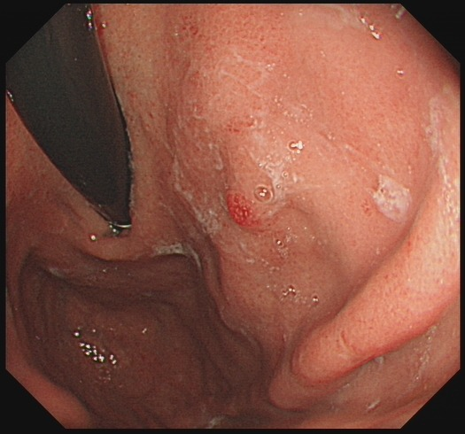
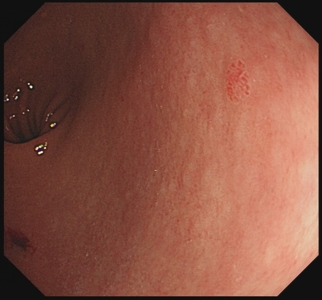
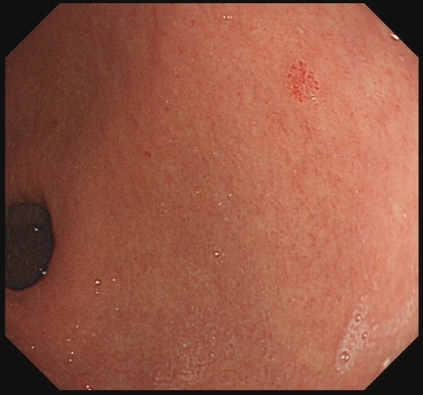
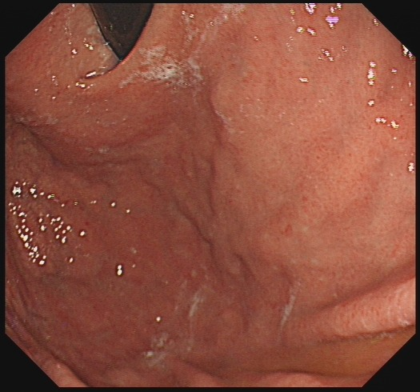
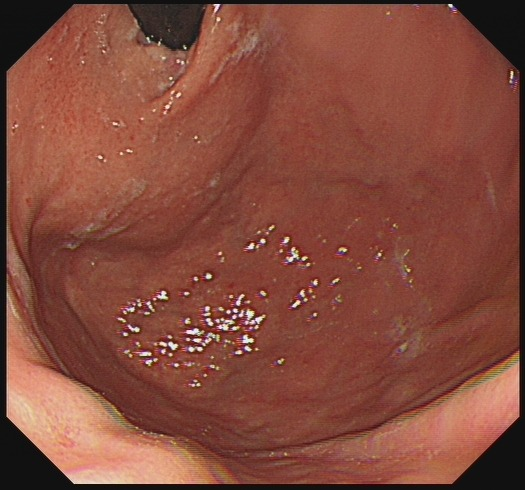
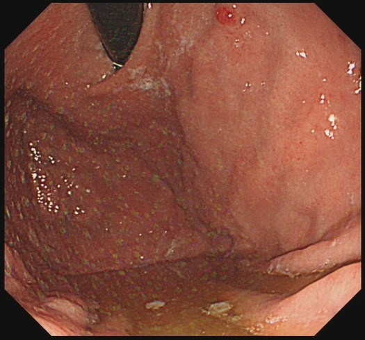
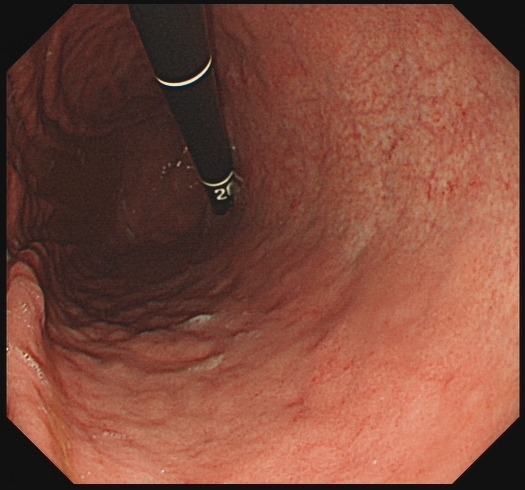
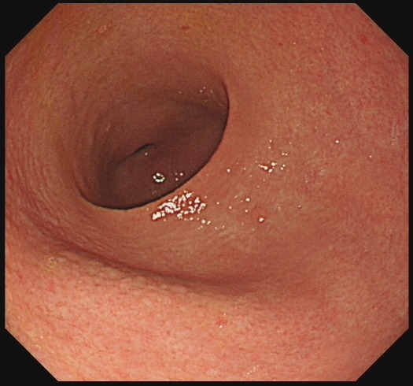
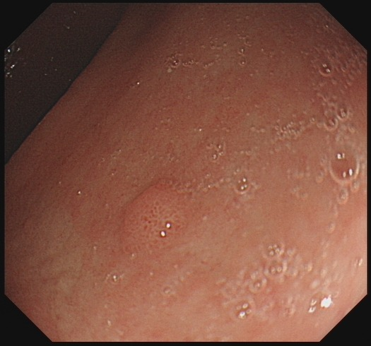
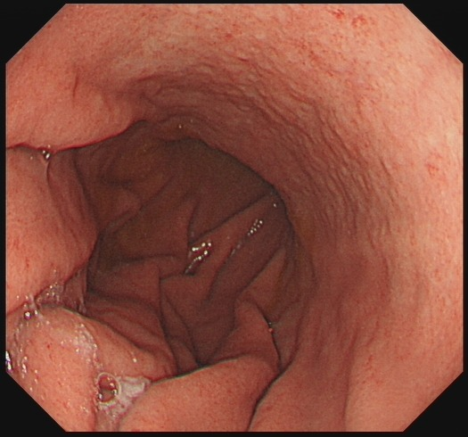
- sign rac: keep (False) F7, F10 — corpus vessels are irregular submucosal vessels through thinned mucosa, not a regular starfish venule pattern; no frame shows RAC, so absent is supported over indeterminate. - sign atrophy: keep (True) F10 — thick non-flattened folds with pale-mottled thinning and submucosal vessels most clearly co-localise the atrophic change; F7 corroborates. - sign spotty_redness: keep (True) F5 — fundic/corpus punctate red dots; F1/F2/F4/F6/F7/F10 corroborate the scattered non-confluent pattern. - sign nodularity: keep (True) F8 — diffuse fine uniform antral granularity, the sole frame showing the sandpaper pattern en face. - sign sticky_mucus: keep (True) F10 — adherent white turbid mucus along folds and margin; F1/F4/F5/F6/F7 corroborate. - sign enlarged_folds: keep (True) F10 — corpus folds thick and not flattened after insufflation, the only frame demonstrating it. - sign fundic_gland_polyp: keep (True) F9 — discrete smooth round pale sessile elevation on corpus/fundus mucosa; F1/F6 corroborate.
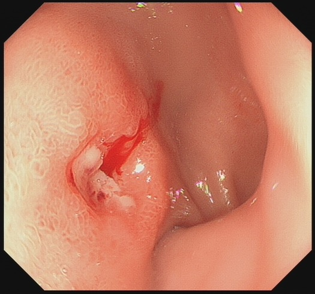
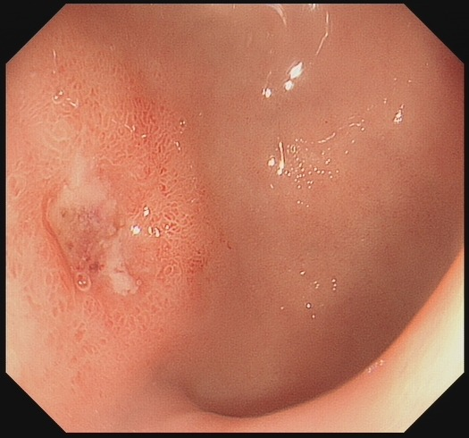
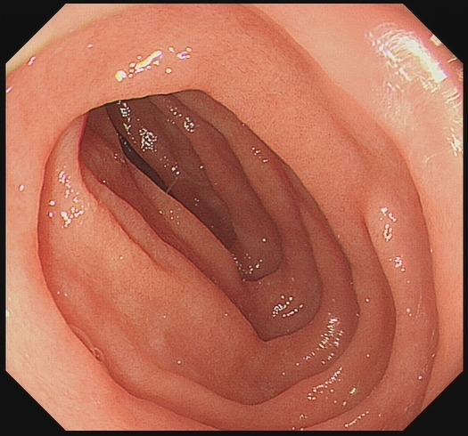
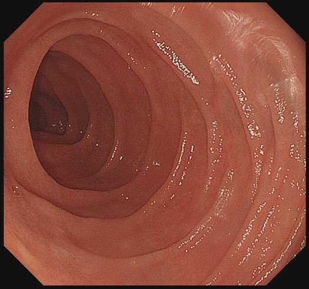
- sign flat_pigmented_spot: demote () F2 — a faint grey-brown patch is present but is not a discrete definite pigmented spot; it cannot be distinguished from fibrin staining, so B's "present" overstates the frame. - sign clean_base: demote () F1, F2 — the fresh red streak overlying the defect on F1 and the grey-brown patch on F2 mean the base is not unequivocally clean; A and B overcall "present" and C's "absent" is not established either. - sign visible_vessel: keep (False) F1, F2 — the ulcer base is only present on F1 and F2; B's citation of F3/F4 is invalid as those frames show no ulcer. - sign adherent_clot: keep (False) F1, F2 — same reasoning; the base is assessable only on F1 and F2, so B's F3/F4 citations do not belong in the chain. - discarded: report-derived "flat pigmented spot" as frame-level ground truth — F2 shows only a faint indeterminate grey-brown patch, so the reference is not corroborated at frame level and is recorded here as a conflict rather than adopted.
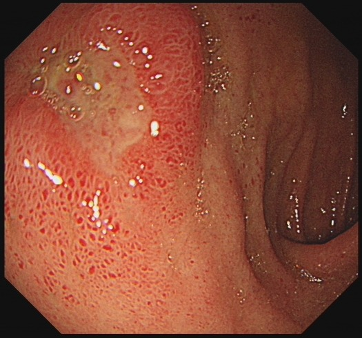
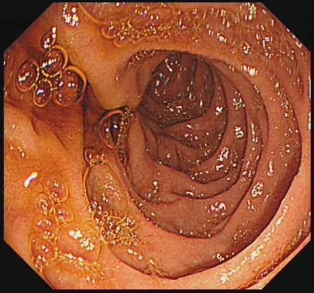
- sign thick_dirty_coating: demote () F1 — an irregular pale-yellow adherent surface exudate with entrapped bubbles on an erythematous raised mound is visible, but the frames show a plaque-like coating on an ill-defined elevated area rather than an unambiguous deep dirty-slough crater; Readings A/B/C uniformly narrated a "thick dirty coating" with more certainty than the single field genuinely supports. - sign thick_clean_coating: keep (False) F1 — the coating is uneven and opaque, not a smooth clean fibrin cap. - sign regenerating_rim: keep (False) F1 — no thin pale red halo at a contracting margin; peripheral erythema belongs to the swollen surround. - sign near_healed: keep (False) F1 — the lesion is not a markedly shrunken defect. - sign indeterminate_h3: keep (False) F1 — no thin residual coating or decoloured patch creating S1/H2 indeterminacy. - sign red_scar: keep (False) F1, F2 — no flat red scar in either field. - sign white_scar: keep (False) F1, F2 — no flat white scar in either field. - discarded: Reading A/C description of a "well-demarcated ulcer crater / oval mucosal defect" with converging attention to a discrete base — F1 shows a raised, ill-defined coated mound rather than a sharply demarcated crater; the crater morphology is overstated relative to the image.
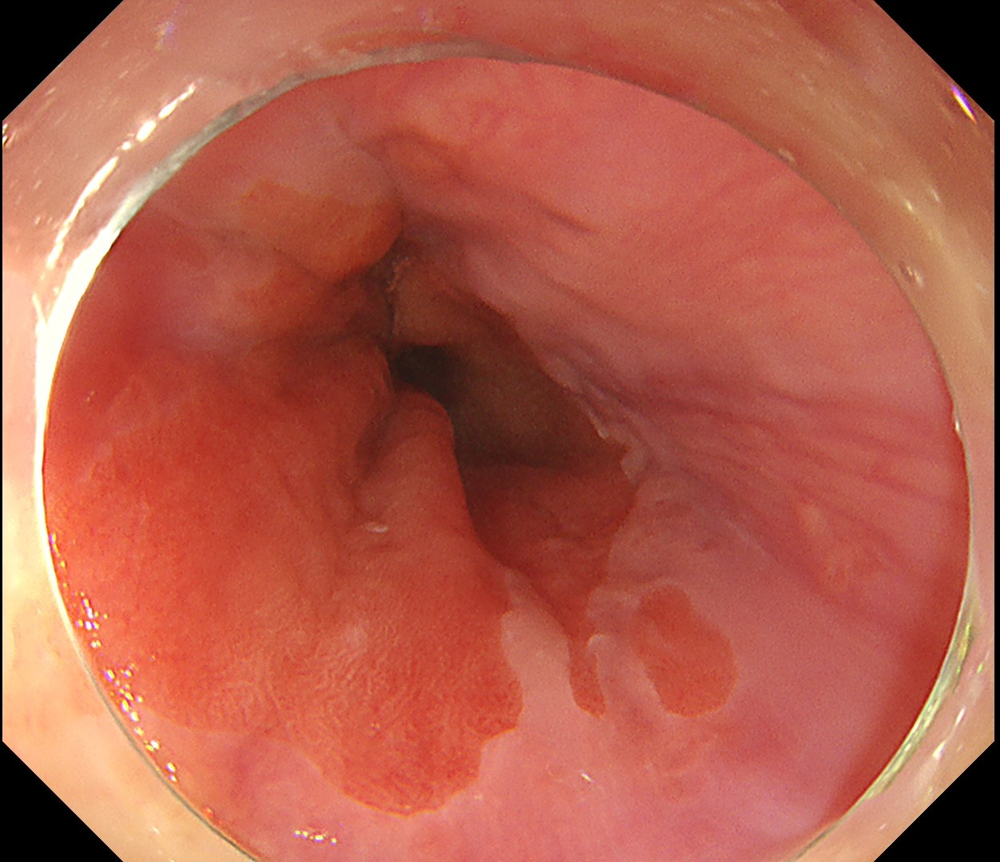
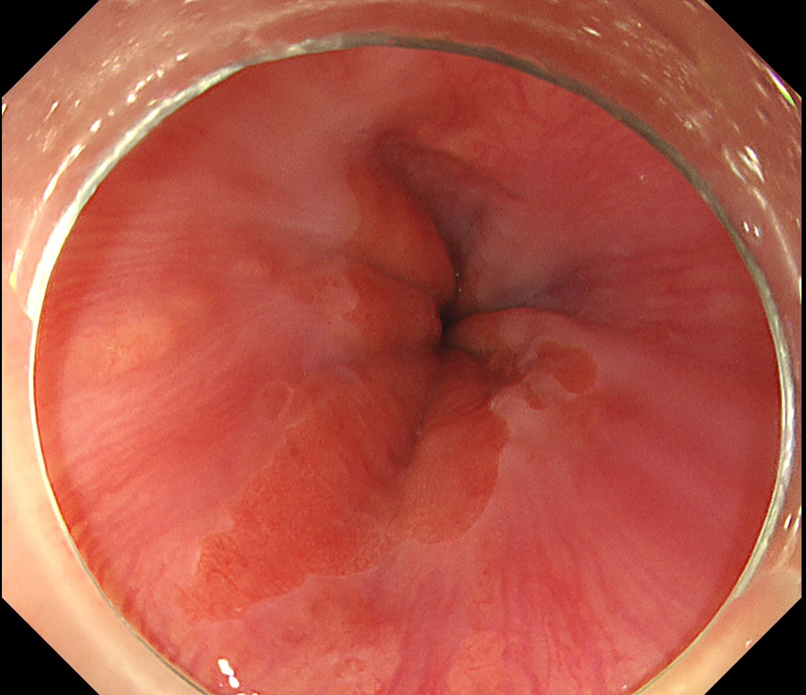
- discarded: Reading A's placement of the longest tongue on the "left/lower wall" versus Reading C's single-tongue description — the frames show tongue-like columnar projections concentrated on the lower wall with additional shorter projections/islands; the exact wall assignment is not resolvable but does not affect C or M, so the shared non-circumferential, tongue-only finding is kept as the basis for C0M1. - discarded: Reading A/C claim of discrete "islands" separate from the main tongue on the right wall — F1 shows one to two small rounded paler areas that are equivocal for true satellite columnar islands versus surface reflection/mucosal contour; indeterminate, and immaterial since they do not extend beyond the longest tongue. - discarded: Reading C's statement that the GEJ is "visually implied" in F2 only — the convergence point serving as the GEJ is visible in F2 and the distal margin is relatable in F1; both frames support the landmark, so the derivation is kept.
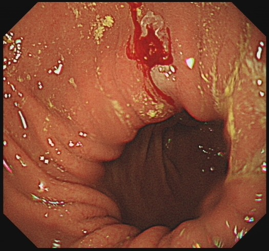
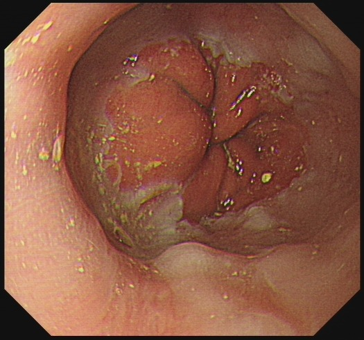
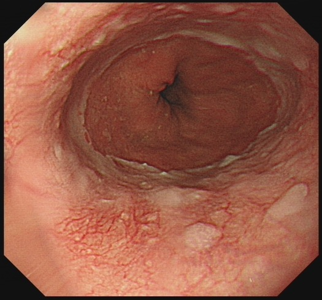
- sign mucosal_break: keep (True) F1 — exudate-capped reddish defect on a single fold crest, ≤5 mm, not bridging fold tops. - sign extensive_break: demote () F2 — the central reddened, nodular area is partly covered by adherent yellow-green material; discrete breaks cannot be confidently distinguished from debris, so no additional break enters the chain, but no defect bridging fold tops or approaching circumferential extent is shown. - discarded: Reading A/C claim of discrete exudate-capped breaks on multiple individual fold crests in F2 — the frame shows adherent debris over a reddened area, not separable individual mucosal breaks. - discarded: Reading A/C claim of pinpoint/discrete erosions or ulcers as mucosal breaks in F3 — F3 shows an intact vascular pattern with only a few small pale spots; no definite mucosal break is demonstrable. - discarded: Reading B claim that F2 shows the squamocolumnar junction with no breaks and that F3 mucosa is intact "without any mucosal breaks" — F2 shows an equivocal reddened area with adherent material (indeterminate, not confidently normal); F3 is largely intact but this is a frame observation, not a basis for grading.
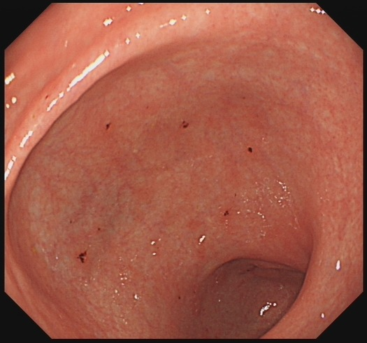
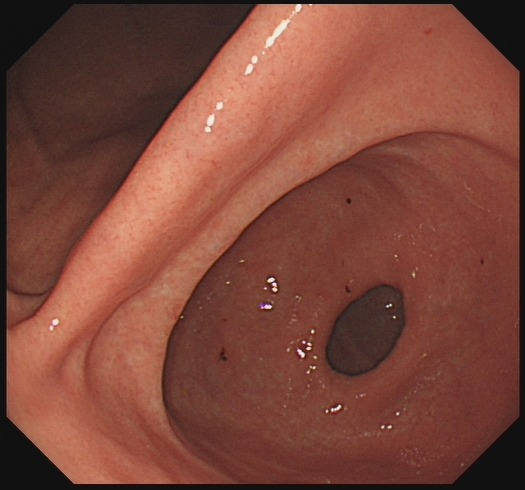
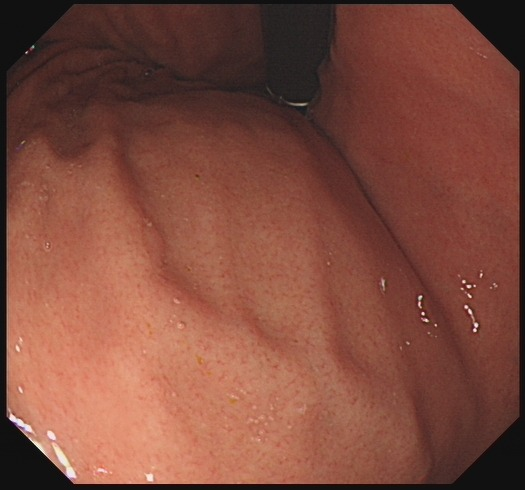
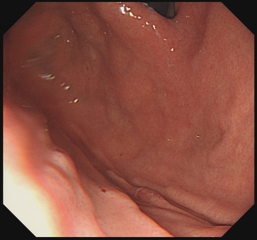
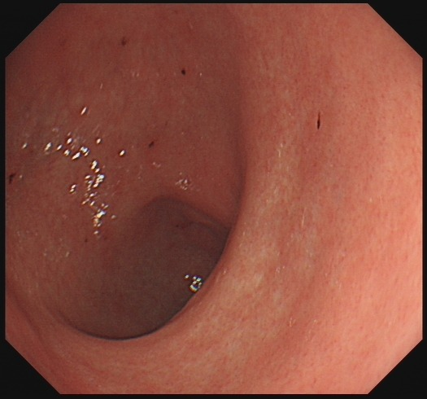
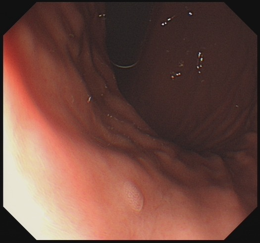
- sign pale_mucosa: demote () F1, F5 — antrum is only mildly paler/tan than the body; no frank whitish atrophic discolouration, so B's "present" overstates and A/C's flat "absent" understates the faint distal pallor. - sign visible_vessels: keep (False) F1, F2, F3, F4, F5, F6 — no branching submucosal network resolved on any frame; A's "indeterminate" is unwarranted since no vessels are demonstrated. - sign atrophy_stated: demote () F1, F5 — mild antral pallor is suggestive but no unequivocal atrophic border or definite atrophic mucosa is shown; B's "present" is too strong, A's "absent" too flat. - sign fold_loss: keep (False) F3, F4, F6 — body and fundic folds are preserved; antral frames (F1, F5) lack folds physiologically and must not be cited as fold-loss evidence, so A's and C's antral citations are excluded and B's body-only frames are extended to include F4. - sign mottled_appearance: keep (False) F1, F2, F3, F4, F5, F6 — no true patchy/mottled pattern anywhere; A's and C's positive-frame listings and B's blank are reconciled to a frame-cited absent. - discarded: Reading C's claim of "flattening of rugal folds" and "slightly mottled surface" as atrophy markers — the images show preserved body/fundic folds and no mottling. - discarded: Reading A/C "granular pattern" and reticular vascular claims as decisive — faint reticular impression on F1 does not constitute a visible submucosal network.
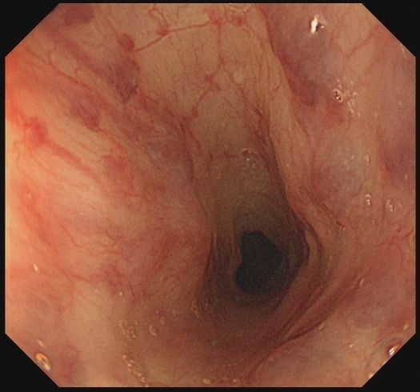
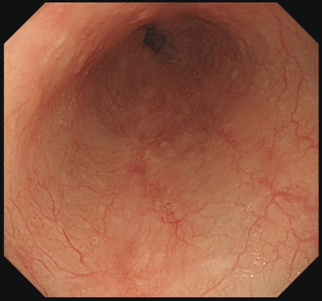
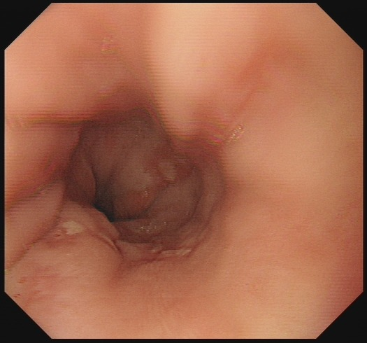
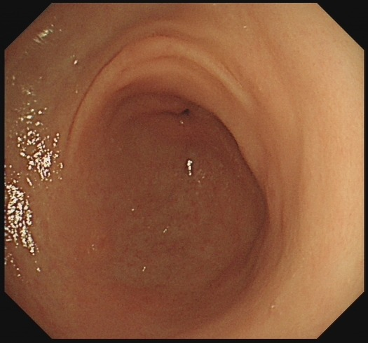
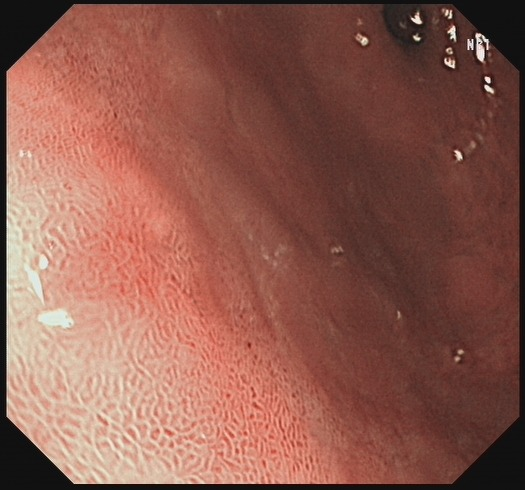
- sign 0-IIb: demote () F5 — colour/texture transition cannot be separated from a flat lesion on white-light close-up; C's indeterminate is better supported than A/B absent. - sign irregular_gland_pattern: demote () F5 — surface texture change present but microsurface not gradable without magnification; B's absent overstated. - sign irregular_vascular_pattern: demote () F5 — microvasculature not assessable on white light; B's absent overstated. - sign background_atrophy: demote () F4, F5 — pale mucosa with fine reticular surface is suggestive but not definitive; A's present overstated, B/C absent understated. - sign background_intestinal_metaplasia: demote () F5 — reticular/gyriform texture suggestive only; B's absent overstated. - sign unclear_border: demote () F5 — a subtle margin is discernible but its demarcation is uncertain; neither absent (A/B) nor firm present (C) is supported. - sign 0-I: keep (False) F1, F2, F3, F4, F5 — no frame shows protrusion above adjacent fold height; C's whole-set citation is the honest support. - sign 0-IIa: demote () F5 — definite elevation not resolvable on the close-up; B's F3 citation is an esophageal frame and does not support a gastric slightly-elevated lesion. - sign 0-IIc: keep (False) F1, F2, F3, F4, F5 — no depression or dip in any frame. - sign 0-III: keep (False) F1, F2, F3, F4, F5 — no ulcer, excavation or white coat in any frame. - sign mixed: keep (False) F5 — only a single possible component; no coexisting depressed/ulcerated element. - discarded: Reading B's 0-IIa placed on F3 (esophagus) — F3 shows converging esophageal folds and a subtle wall contour, not a demarcated slightly elevated gastric lesion. - discarded: Reading A's flat-topped plateau "rising above adjacent fold" and reddish-brown raised plateau on F4/F5 — the images show a colour/texture transition without a resolvable elevation; height claim not supported.